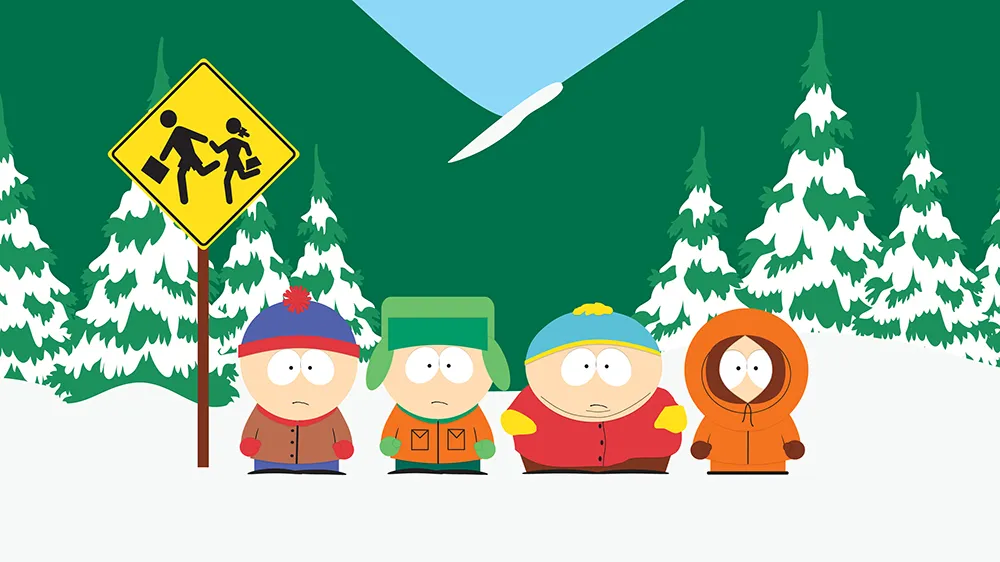
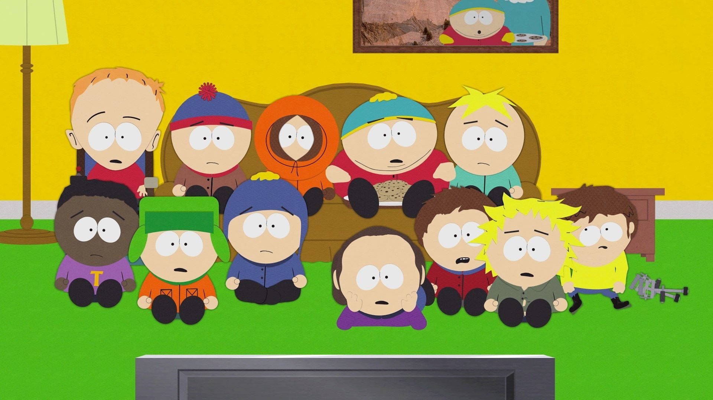
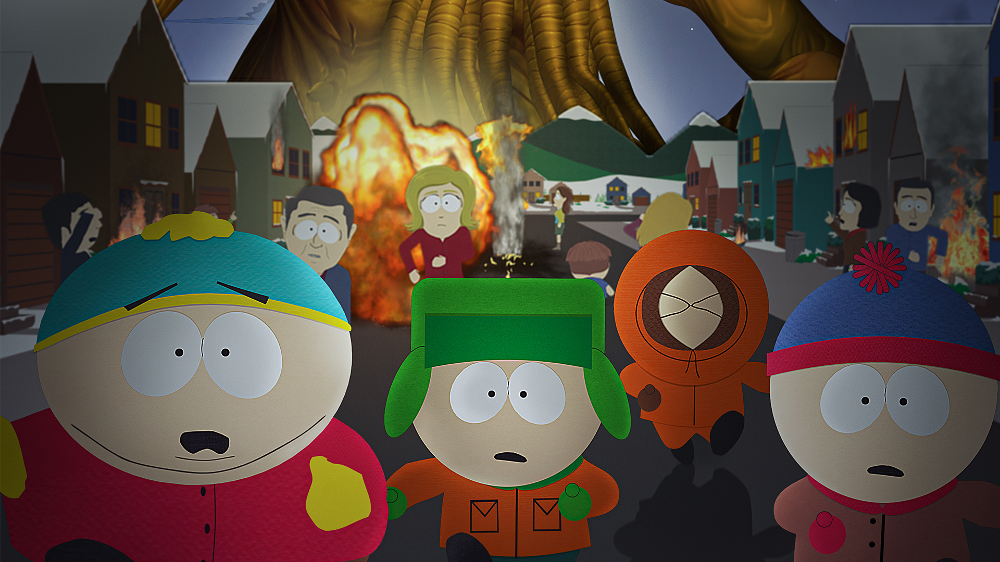
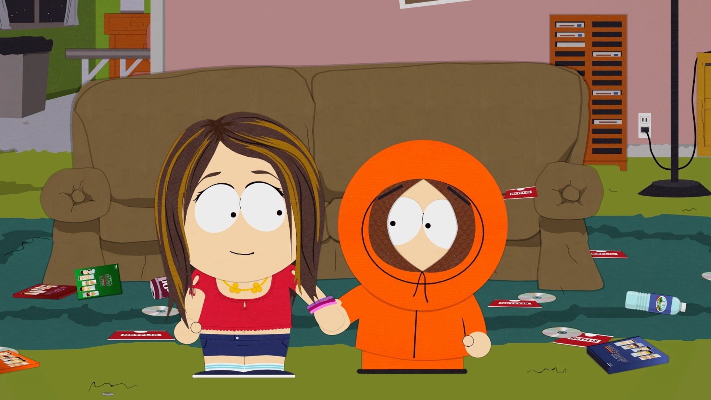

South Park es una serie animada creada por Trey Parker y Matt Stone que se estrenó en 1997. La trama sigue a cuatro niños —Stan, Kyle, Cartman y Kenny— que viven en la ciudad ficticia de South Park, Colorado. Aunque parece una serie para niños debido a sus personajes principales, South Park es conocida por su humor negro, irreverente y sus sátiras sociales. La serie aborda temas como la política, la religión, la cultura popular y los problemas sociales de una manera exagerada y controvertida. Los episodios, que suelen reflejar eventos actuales, destacan por su crítica mordaz a la sociedad moderna, utilizando a los personajes para explorar las absurdidades del mundo a través de situaciones ridículas y, a menudo, muy provocativas.
Desde su estreno en 1997, South Park ha conquistado a millones de fans con su humor irreverente y su capacidad para abordar temas actuales de forma satírica. A lo largo de sus 27 temporadas, la serie nos ha regalado momentos icónicos, personajes inolvidables y episodios que han dejado huella en la cultura popular. Cada temporada refleja una mezcla única de controversia, comedia y crítica social, manteniendo a South Park como un referente de la televisión animada. Explora aquí cada temporada y revive los episodios más memorables de esta legendaria serie
Siendo el inicio de la serie, fue un fenómeno cultural. Su humor irreverente atrajo una enorme cantidad de espectadores curiosos, y la serie rápidamente se convirtió en un éxito masivo.
Marcó el estreno más exitoso desde 1998, con 3.7 millones de espectadores en el primer episodio. Además, contó con el especial "200" y "201", que generaron gran controversia y audiencia.

Incluyó el icónico episodio "Make Love, Not Warcraft", que ganó un Emmy y es uno de los favoritos entre los fans. La audiencia de la temporada fue consistentemente alta.
El episodio "La mamá de Cartman sigue siendo una puta sucia" atrajo 6.2 millones de espectadores, convirtiéndose en el programa más visto del cable básico no deportivo en su momento.

El episodio "Goobacks" (famoso por la frase "¡Nos quitan el trabajo!") alcanzó 30 millones de espectadores, siendo uno de los episodios más vistos en la historia de la serie.